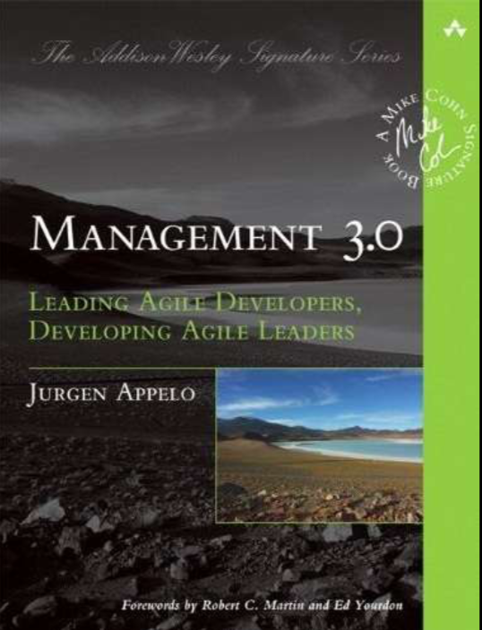
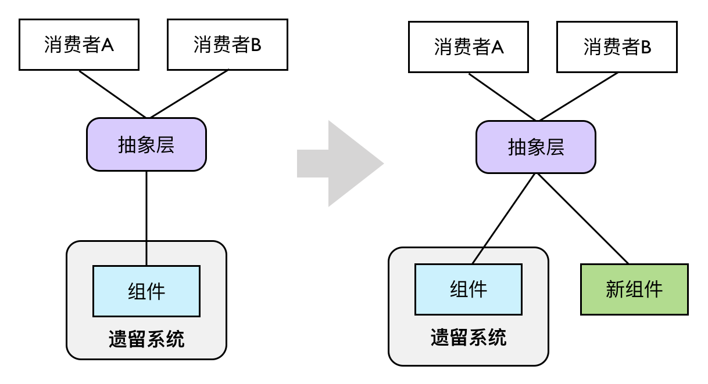

- 001 「战略篇」访谈 DDD 和微服务是什么关系？.md.html
- 002 「战略篇」开篇词：领域驱动设计，重焕青春的设计经典.md.html
- 003 领域驱动设计概览.md.html
- 004 深入分析软件的复杂度.md.html
- 005 控制软件复杂度的原则.md.html
- 006 领域驱动设计对软件复杂度的应对（上）.md.html
- 007 领域驱动设计对软件复杂度的应对（下）.md.html
- 008 软件开发团队的沟通与协作.md.html
- 009 运用领域场景分析提炼领域知识（上）.md.html
- 010 运用领域场景分析提炼领域知识（下）.md.html
- 011 建立统一语言.md.html
- 012 理解限界上下文.md.html
- 013 限界上下文的控制力（上）.md.html
- 014 限界上下文的控制力（下）.md.html
- 015 识别限界上下文（上）.md.html
- 016 识别限界上下文（下）.md.html
- 017 理解上下文映射.md.html
- 018 上下文映射的团队协作模式.md.html
- 019 上下文映射的通信集成模式.md.html
- 020 辨别限界上下文的协作关系（上）.md.html
- 021 辨别限界上下文的协作关系（下）.md.html
- 022 认识分层架构.md.html
- 023 分层架构的演化.md.html
- 024 领域驱动架构的演进.md.html
- 025 案例 层次的职责与协作关系（图文篇）.md.html
- 026 限界上下文与架构.md.html
- 027 限界上下文对架构的影响.md.html
- 028 领域驱动设计的代码模型.md.html
- 029 代码模型的架构决策.md.html
- 030 实践 先启阶段的需求分析.md.html
- 031 实践 先启阶段的领域场景分析（上）.md.html
- 032 实践 先启阶段的领域场景分析（下）.md.html
- 033 实践 识别限界上下文.md.html
- 034 实践 确定限界上下文的协作关系.md.html
- 035 实践 EAS 的整体架构.md.html
- 036 「战术篇」访谈：DDD 能帮开发团队提高设计水平吗？.md.html
- 037 「战术篇」开篇词：领域驱动设计的不确定性.md.html
- 038 什么是模型.md.html
- 039 数据分析模型.md.html
- 040 数据设计模型.md.html
- 041 数据模型与对象模型.md.html
- 042 数据实现模型.md.html
- 043 案例 培训管理系统.md.html
- 044 服务资源模型.md.html
- 045 服务行为模型.md.html
- 046 服务设计模型.md.html
- 047 领域模型驱动设计.md.html
- 048 领域实现模型.md.html
- 049 理解领域模型.md.html
- 050 领域模型与结构范式.md.html
- 051 领域模型与对象范式（上）.md.html
- 052 领域模型与对象范式（中）.md.html
- 053 领域模型与对象范式（下）.md.html
- 054 领域模型与函数范式.md.html
- 055 领域驱动分层架构与对象模型.md.html
- 056 统一语言与领域分析模型.md.html
- 057 精炼领域分析模型.md.html
- 058 彩色 UML 与彩色建模.md.html
- 059 四色建模法.md.html
- 060 案例 订单核心流程的四色建模.md.html
- 061 事件风暴与业务全景探索.md.html
- 062 事件风暴与领域分析建模.md.html
- 063 案例 订单核心流程的事件风暴.md.html
- 064 表达领域设计模型.md.html
- 065 实体.md.html
- 066 值对象.md.html
- 067 对象图与聚合.md.html
- 068 聚合设计原则.md.html
- 069 聚合之间的关系.md.html
- 070 聚合的设计过程.md.html
- 071 案例 培训领域模型的聚合设计.md.html
- 072 领域模型对象的生命周期-工厂.md.html
- 073 领域模型对象的生命周期-资源库.md.html
- 074 领域服务.md.html
- 075 案例 领域设计模型的价值.md.html
- 076 应用服务.md.html
- 077 场景的设计驱动力.md.html
- 078 案例 薪资管理系统的场景驱动设计.md.html
- 079 场景驱动设计与 DCI 模式.md.html
- 080 领域事件.md.html
- 081 发布者—订阅者模式.md.html
- 082 事件溯源模式.md.html
- 083 测试优先的领域实现建模.md.html
- 084 深入理解简单设计.md.html
- 085 案例 薪资管理系统的测试驱动开发（上）.md.html
- 086 案例 薪资管理系统的测试驱动开发（下）.md.html
- 087 对象关系映射（上）.md.html
- 088 对象关系映射（下）.md.html
- 089 领域模型与数据模型.md.html
- 090 领域驱动设计对持久化的影响.md.html
- 091 领域驱动设计体系.md.html
- 092 子领域与限界上下文.md.html
- 093 限界上下文的边界与协作.md.html
- 094 限界上下文之间的分布式通信.md.html
- 095 命令查询职责分离.md.html
- 096 分布式柔性事务.md.html
- 097 设计概念的统一语言.md.html
- 098 模型对象.md.html
- 099 领域驱动设计参考过程模型.md.html
- 100 领域驱动设计的精髓.md.html
- 101 实践 员工上下文的领域建模.md.html
- 102 实践 考勤上下文的领域建模.md.html
- 103 实践 项目上下文的领域建模.md.html
- 104 实践 培训上下文的业务需求.md.html
- 105 实践 培训上下文的领域分析建模.md.html
- 106 实践 培训上下文的领域设计建模.md.html
- 107 实践 培训上下文的领域实现建模.md.html
- 108 实践 EAS 系统的代码模型.md.html
- 109 后记：如何学习领域驱动设计.md.html
- 捐赠
016 识别限界上下文（下）
从工作边界识别限界上下文
正如架构设计需要多个视图来全方位体现架构的诸多要素，我们也应借助更多的角度全方位分析限界上下文。如果说为限界上下文划分业务边界，更多的是从业务相关性（内聚）判断业务的归属，那么基于团队合作划分工作边界可以帮助我们确定限界上下文合理的工作粒度。
倘若我们认可第 3-2 课中提及的三个原则或实践：2PTs 规则、特性团队、康威定律，则意味着项目经理需要将一个限界上下文要做的工作分配给大约 7~10 人的特性团队。如此看来，对限界上下文的粒度识别就变成了对工作量的估算。我们并没有严谨的算法去准确估算工作量，可是对于一个有经验的项目经理（或者技术负责人），要进行工作量的大致估算，还是能够办到的。当我们发现一个限界上下文过大，又或者特性团队的工作分配不均匀时，就应该果断对已有限界上下文进行切分。
工作分配的基础在于“尽可能降低沟通成本”，遵循康威定律，沟通其实就是项目模块之间的依赖，这个过程同样不是一蹴而就的。康威认为：
在大多数情况下，最先产生的设计都不是最完美的，主导的系统设计理念可能需要更改。因此，组织的灵活性对于有效的设计有着举足轻重的作用，必须找到可以鼓励设计经理保持他们的组织精简与灵活的方法。
特性团队正是用来解决这一问题的。换言之，当我们发现团队规模越来越大，失去了组织精简与灵活的优势，实际上就是在传递限界上下文过大的信号。项目经理对此需要有清醒认识，当团队规模违背了 2PTs 时，就该坐下来讨论一下如何细分团队的问题了。因此，按照团队合作的角度划分限界上下文，其实是一个动态的过程、演进的过程。
我在给某音乐网站进行领域驱动设计时，通过识别业务相关性划分了如下限界上下文。
- Media Player（online & offline）：提供音频和视频文件的播放功能，区分在线播放与离线播放；
- Music：与音乐相关的业务，包括乐库、歌单、歌词；
- FM Radio：电台；
- Live：直播；
- MV：短视频和 MV；
- Singer：歌手；
- Musician：音乐人，注意音乐人与歌手的区别；
- Music Community：音乐社区；
- File Sharing：包括下载和传歌等与文件有关的功能；
- Tag：支持标签管理，包括音乐的分类如最新、话题等分类标签还有歌曲标签；
- Loyalty：与提高用户粘度有关的功能，如关注、投票、收藏、歌单等功能；
- Utilities：音乐工具，包括音效增强等功能；
- Recommendation：推荐；
- Search：对整个音乐网站内容的搜索，包括对人、歌曲、视频等内容的搜索；
- Activity：音乐网站组织的活动；
- Advertisement：推广与广告；
- Payment：支付。
在识别限界上下文时，我将直播（Live）视为与音乐、电台、MV 短视频同等层次的业务分类，然而，殊不知该音乐网站直播模块的开发团队已经随着功能的逐渐增强发展到了接近 200 人规模的大团队，这显然不是一个限界上下文边界可以控制的规模。即使属于直播业务的业务活动都与直播领域知识有关，我们也应该基于 2PTs 原则对直播限界上下文作进一步分解，以满足团队管理以及团队成员充分沟通的需要。
如果我们从团队合作层面看待限界上下文，就从技术范畴上升到了管理范畴。Jurgen Appelo 在《管理 3.0：培养和提升敏捷领导力（Management 3.0: Leading Agile Developers，Developing Agile Leaders）》这本书中提到，一个高效的团队需要满足两点要求：
- 共同的目标
- 团队的边界

虽然 Jurgen Appelo 在提及边界时，是站在团队结构的角度来分析的；可在设计团队组织时确定工作边界的原则，恰恰与限界上下文的控制边界暗暗相合。总结书中对边界的阐释，大致包括：
- 团队成员应对团队的边界形成共识，这就意味着团队成员需要了解自己负责的限界上下文边界，以及该限界上下文如何与外部的资源以及其他限界上下文进行通信。
- 团队的边界不能太封闭（拒绝外部输入），也不能太开放（失去内聚力），即所谓的“渗透性边界”，这种渗透性边界恰恰与“高内聚、松耦合”的设计原则完全契合。
针对这种“渗透性边界”，团队成员需要对自己负责开发的需求“抱有成见”，在识别限界上下文时，“任劳任怨”的好员工并不是真正的好员工。一个好的员工明确地知道团队的职责边界，他应该学会勇于承担属于团队边界内的需求开发任务，也要敢于推辞职责范围之外强加于他的需求。通过团队每个人的主观能动，就可以渐渐地形成在组织结构上的“自治单元”，进而催生出架构设计上的“自治单元”。同理，“任劳任怨”的好团队也不是真正的好团队，团队对自己的边界已经达成了共识，为什么还要违背这个共识去承接不属于自己边界内的工作呢？这并非团队之间的“恶性竞争”，也不是工作上的互相推诿；恰恰相反，这实际上是一种良好的合作，表面上维持了自己的利益，然而在一个组织下，如果每个团队都以这种方式维持自我利益，反而会形成一种“互利主义”。
这种“你给我搔背，我也替你抓抓痒”的互利主义最终会形成团队之间的良好协作。如果团队领导者与团队成员能够充分认识到这一点，就可以从团队层面思考限界上下文。此时，限界上下文就不仅仅是架构师局限于一孔之见去完成甄别，而是每个团队成员自发组织的内在驱动力。当每个人都在思考这项工作该不该我做时，变相地就是在思考职责的分配是否合理，限界上下文的划分是否合理。
从应用边界识别限界上下文
质量属性
管理的目的在于打造高效的团队，但最后还是要落脚到技术实现上来，不懂业务分析的架构师不是一个好的程序员，而一个不懂得提前识别系统风险的程序员更不是一个好的架构师。站在技术层面上看待限界上下文，我们需要关注的其实是质量属性（Quality Attributes）。如果把关乎质量属性的问题都视为在将来可能会发生，其实就是“风险（Risk）”。
架构是什么？Martin Fowler 认为：架构是重要的东西，是不容易改变的决策。如果我们未曾预测到系统存在的风险，不幸它又发生了，带给系统架构的改变可能是灾难性的。利用限界上下文的边界，就可以将这种风险带来的影响控制在一个极小的范围，这也是前面提及的安全。为什么说限界上下文是领域驱动设计中最重要的元素，答案就在这里。
我曾经负责开发一款基于大数据平台的 BI 产品，在架构设计时，对性能的评估方案是存在问题的，我们当时考虑了符合生产规模的数据量，并以一个相对可行的硬件与网络环境，对 Spark + Parquet 的技术选型进行测试，测试结果满足了设定的响应时间值。然而，两个因素的缺失为我们的架构埋下了祸根。在测试时，我们没有考虑并发访问量，测试的业务场景也过于简单。我们怀着一种鸵鸟心态，在理论上分析这种决策（Spark 是当时最快速的基于内存的数据分析平台，Parquet 是列式存储，尤为适合统计分析）是对的，然后就按照我们期望的形式去测试，实际上是将风险悄悄地埋藏起来。
当产品真正销售给客户使用时，我们才发现客户的业务场景非常复杂，对性能的要求也更加苛刻。例如，它要求达到 100 ~ 500 的并发访问量，同时对大数据量进行统计分析与指标运算，并期望实时获得分析结果；而客户所能提供的 Spark 集群却是有限度的。事实上，基于 Spark 的 driver-worker 架构，它本身并不擅长完成高并发的数据分析任务。对于一个分析任务，Spark 可以利用集群的力量由多个 worker 同时并行地执行成百上千的 task，但瓶颈在 driver 端，一旦上游同时有多个请求涌入，响应能力就不足了。最终，我们的产品在真正的压力测试下一败涂地。
幸而，我们划定了限界上下文，并由此建立了数据分析微服务。针对客户高并发的实时统计分析需求，在保证 REST API 不变的情况下，我们更改了技术选型，选择基于 ElasticSearch 的数据分析微服务替换旧服务。这种改变几乎不影响产品的其他模块与功能，前端代码仅仅做了少量修改。3 个人的团队在近一个月的周期内基本完成了这部分数据分析功能，及时掐断了炸药的导火线。
重用和变化
无论是重用领域逻辑还是技术实现，都是在设计层面上我们必须考虑的因素，需求变化更是影响设计策略的关键因素。我在前面分析限界上下文的本质时，就提及一个限界上下文其实是一个“自治”的单元。基于自治的四个特征，我们也可以认为这个自治的单元其实就是逻辑重用和封装变化的设计单元。这时，对限界上下文边界的考虑，更多是出于技术设计因素，而非业务因素。在后面讲解的上下文映射（Context Map）模式时，Eric Evans 总结的共享内核其实就是重用的体现，而开放主机服务与防腐层则是对变化的主动/被动应对。
运用重用原则分离出来的限界上下文往往对应于子领域（Sub Domain），尤其作为支撑子领域。我在为一家公司的物流联运管理系统提供领域驱动设计咨询时，通过与领域专家的沟通，我注意到他在描述运输、货站以及堆场的相关业务时，都提到了作业和指令的概念。虽然属于不同的领域，但指令的收发、作业的制订与调度都是相同的，区别只在于作业与指令的内容，以及作业调度的周期。为了避免在运输、货站与堆场各自的限界上下文中重复设计与实现作业与指令等领域模型，我们可以将作业与指令单独划分到一个专门的限界上下文中。它作为上游限界上下文，提供对运输、货站与堆场的业务支撑。
限界上下文对变化的应对，其实是“单一职责原则”的体现，即一个限界上下文不应该存在两个引起它变化的原因。还是这个物流联运管理系统，最初团队的设计人员将运费计算与账目、结账等功能放在了财务上下文中。当国家的企业征税策略发生变化时，会引起财务上下文的变化，引起变化的原因是财务规则与政策的调整。倘若运费计算的规则也发生了变化，同样会引起财务上下文的变化，但引起变化的原因却是物流运输的业务需求。如果我们将运费计算单独从财务上下文中分离出来，就可以独立演化，符合前面提及的“自治”原则，实现了两种不同关注点的分离。
遗留系统
自治原则的唯一例外是遗留系统，因为领域驱动设计建议的通常做法是将整个遗留系统视为一个限界上下文。那么，什么是遗留系统？根据维基百科的定义，它是一种旧的方法、旧的技术、旧的计算机系统或应用程序，这个定义并不能解释遗留系统的真相。我认为，系统之所以成为遗留系统，关键在于知识的缺乏。文档不够全面真实，掌握系统知识的团队成员泰半离开，系统的代码可能是一个大泥团。因此，我对遗留系统的定义是“一个还在运行和使用，但已步入软件生命衰老期的缺乏足够知识的软件系统”。
倘若运用领域驱动设计的系统要与这样一个遗留系统打交道，应该怎么办？窃以为，粗暴地将整个遗留系统包裹在一个限界上下文中，未免太理想化和简单化了。要点还是自治，这时候我们应该站在遗留系统的调用者来观察它，考虑如何与遗留系统集成，然后逐步对遗留系统进行抽取与迁移，形成自治的限界上下文。
在这个过程中，我们可以借鉴技术栈迁移中常常运用的“抽象分支（Branch By Abstraction）”手法。该手法会站在消费者（Consumer）一方观察遗留系统，找到需要替换的单元（组件）；然后对该组件进行抽象，从而将消费者与遗留系统中的实现解耦。最后，提供一个完全新的组件实现，在保留抽象层接口不变的情况下替换掉遗留系统的旧组件，达到技术栈迁移的目的：

如上图所示的抽象层，本质就是后面我们要提到的“防腐层（Anticorruption Layer）”，通过引入这么一个间接层来隔离与遗留系统之间的耦合。这个防腐层往往是作为下游限界上下文的一部分存在。若有必要，也可以单独为其创建一个独立的限界上下文。
设计驱动力
结合业务边界、工作边界和应用边界，形成一种层层推进的设计驱动力，可以让我们对限界上下文的设计变得更加准确，边界的控制变得更加合理，毕竟，限界上下文的识别对于整个系统的架构至关重要。在领域驱动的战略设计阶段，如果我们对识别出来的限界上下文的准确性还心存疑虑，那么比较实际的做法是保持限界上下文一定的粗粒度。倘若觉得功能的边界不好把握分寸，可以考虑将这些模棱两可的功能放在同一个限界上下文中。待到该限界上下文变得越来越庞大，以至于一个 2PTs 团队无法完成交付目标；又或者该限界上下文的功能各有不同的质量属性要求；要么就是因为重用或变化，使得我们能够更清楚地看到分解的必要性；此时我们再对该限界上下文进行分解，就会更加有把握。这是设计的实证主义态度。
通过以上过程去识别限界上下文，仅仅是一种对领域问题域的静态划分，我们还缺少另外一个重要的关注点，即：限界上下文之间是如何协作的？倘若限界上下文识别不合理，协作就会变得更加困难，尤其当一个限界上下文对应一个微服务时，协作成本更会显著增加。反过来，当我们发现彼此协作存在问题时，说明限界上下文的划分出现了问题，这算是对识别限界上下文的一种验证方法。Eric Evans 将这种体现限界上下文协作方式的要素称之为“上下文映射（Context Map）”。
© 2019 - 2023 Liangliang Lee. Powered by gin and hexo-theme-book.